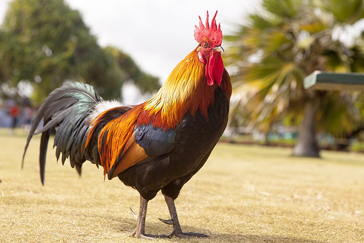

Rooster
Bird. An adult male chicken is called a “rooster” and an adult female is called a “hen.” Roosters are larger, usually more brightly colored, and have larger combs on top of their heads compared to hens. Chickens can fly but because they are heavy, they can only go about 60 meters (200 ft).
